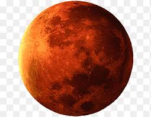

المريخ

المريخ، المعروف بالكوكب الأحمر، يتميز بلونه الناجم عن أكسيد الحديد. يحتوي على تضاريس متنوعة، بما في ذلك البراكين الكبرى وأودية عميقة. الغلاف الجوي للمريخ رقيق ويتكون أساسًا من ثاني أكسيد الكربون، مما يجعل الظروف فيه باردة جدًا. يعتبر المريخ هدفًا رئيسيًا للبحث عن حياة خارج كوكب الأرض، حيث توجد أدلة على وجود ماء سائل في الماضي.
الصفحه الرئيسية